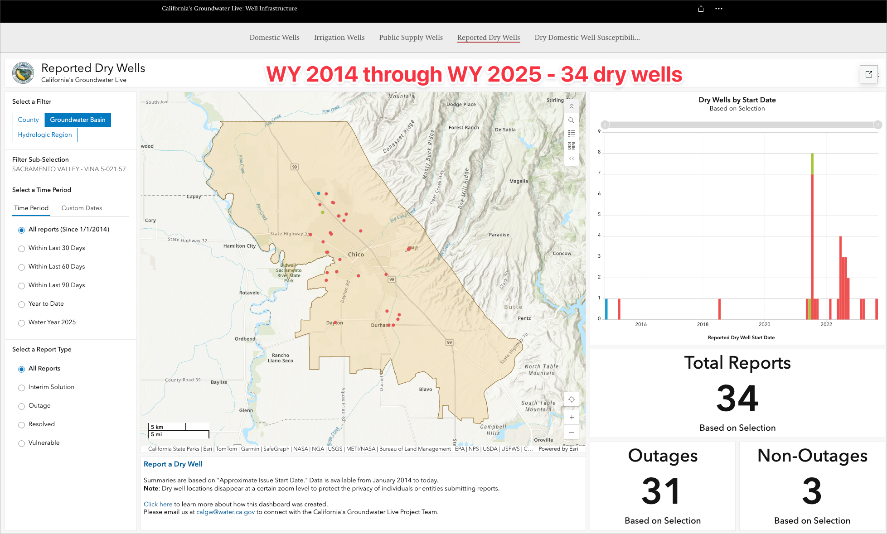
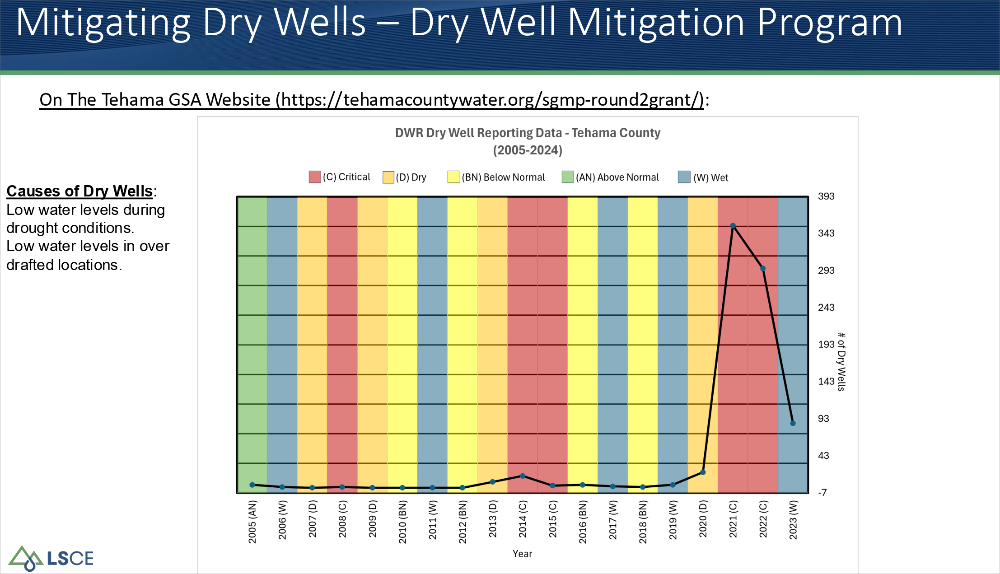
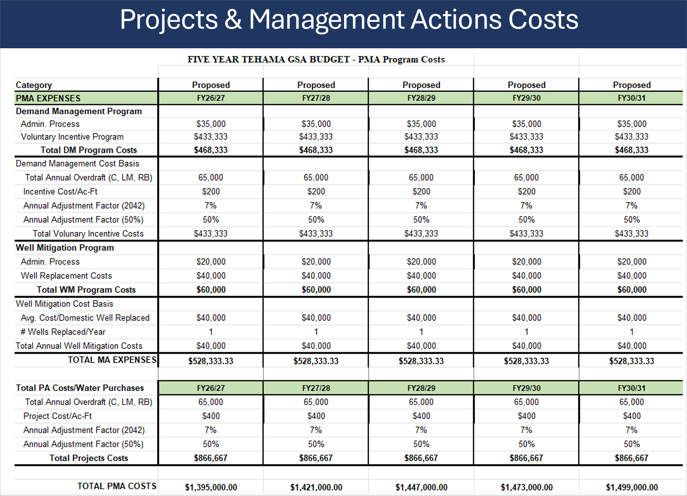

Call to Order & Pledge of Allegiance
Public Comment
Members of the public may address the Board on any matter not already listed below. The Board cannot act at this meeting on requests made under this section of the agenda.
Approval of Minutes — April 15, 2026
Review and Take Appropriate Action
Draft minutes are included in the printed packet (pp. 4–8).
Finances & Payment of the Bills
Review and Take Appropriate Action
FY 2025–26 Budget vs. Billed YTD (Jul 2025 – Apr 2026)
$152,642 billed against a $619,400 approved budget — 24.6% utilized through April; $466,758 remaining.
May 2026 Itemized Bills
| Category | Description | Amount |
|---|---|---|
| Personnel | Giezentanner & Associates – General Manager | $14,583.33 |
| External Support | Klein DeNatale Goldner – General Counsel | $977.50 |
| Technical Support | Provost & Pritchard – Keefer Slough / Rock Creek Flood-MAR | $4,794.82 |
| Total | $20,355.65 | |
Office Supply & Printer Toner — Staff Memo
| Vendor | Item | Amount |
|---|---|---|
| Staples | Hammermill copy paper, 2 cases (20 lb., 92-brightness) | $87.38 |
| Amazon | HP 202X color toner set + 206X black toner | $560.21 |
| Total Request | $647.59 | |
South Vina Extension — Phase 1 Consultant Selection
Review and Take Appropriate Action
Why Accelerate Now — Sequencing Through the Prop 4 Window
Proposal Comparison
Water & Land Solutions / Provost & Pritchard
Joint proposal · Maddie Munson, Project Lead (WLS)
Geosyntec Consultants, Inc.
Sole proposal · Amer A. Hussain, P.E. (Fresno)
SWEEP Block Grant — Concept Proposal (Prop 4 Climate Bond)
Discuss and Take Appropriate Action — Resolution No. 2026-XX
Regional Partner Structure
$4,000,000 Budget Allocation
FY 2026–27 Annual Assessment — Process & Timeline
Informational Update · Rate: $4.91/acre · Total Budget: $472,069
What carries forward from Year 1 (no new action required)
- Prop 218 authority (Jan 15, 2025 election, 87.61% approval)
- Resolution 25-04 (Aug 5, 2025) — alternative collection method under Water Code §37203
- Tax Code 67675, assigned and continuing
- Direct Assessment Agreement — auto-renews; no annual re-execution required
2026 General District Election — Preliminary Overview
Informational · Election Day: Tuesday, November 3, 2026 · Odd-numbered seats (1, 3, 5, 7, 9)
Key Statutory Dates
| Date | Action | Authority |
|---|---|---|
| July 1, 2026 | Secretary delivers Notice of Offices to be Filled | EC §§ 10509, 10524 |
| July 6 – Aug. 5 | Publication window for Notice of Election | EC §§ 12112, 10515 |
| July 13 – Aug. 7 | Declaration of Candidacy filing; Candidate Statements due | EC §§ 10510, 13307 |
| July 16 | Deadline to authorize vote-by-mail in lieu of vote-by-proxy | EC § 10531 |
| Aug. 5 | Last day to adopt ordinance updating assessment roll | Wat. Code §§ 35003, 35003.1 |
| Aug. 12 | Extended filing if any incumbent does not file | EC § 10516 |
| Nov. 3 | Election Day | |
| Nov. 5 | Canvass commences | EC § 10547 |
| Dec. 4 | New directors take office at noon | EC § 10554; Wat. Code § 34701 |
Vina GSA Periodic Evaluation — Update
Review and Take Appropriate Action · Seven subtopics
a GSP Plan Evaluation Process & Timeline
b Domestic Well Mitigation Program — SHAC Recommendations
Periodic Evaluation Recommendation
The SHAC recommends the PE describe that during the next implementation period, the GSA will develop a Well Mitigation Program that fits the needs of the subbasin.
Near-Term Action Recommendation
SHAC recommends the GSA Board dedicate funding in the FY 2026–27 Annual Budget to initiate program development in early 2027 after all SGM Grant Projects are complete, so as not to overload staff capacity.
SHAC consensus was unanimous despite differing perspectives on timing and approach. Attachments: LWA Tech Memo on Domestic Well Survey & Risk Assessment; Mitigation Programs Summary Matrix; Well Registry Programs.
Reported Dry Wells in the Vina Subbasin

By Way of Contrast — Tehama County


What this condition does not say is, develop and implement a domestic well mitigation plan. Nevertheless, the Vina GSA has set aside funds to begin the process of creating a domestic well mitigation plan, which will begin in early 2027.
c Land Subsidence Strawman — Landowner Position
The Vina GSA's April 24, 2026 strawman proposal for land subsidence SMC, responding to DWR Recommended Corrective Action 5. The table below sets out the landowner position section by section.
| # | Section / Topic | Strawman as Drafted | Landowner Position | Why |
|---|---|---|---|---|
| 1 | Minimum Threshold (MT) | 0.2 ft/yr at any RMS, OR 0.5 ft / 5-yr cumulative (stacked triggers) | EDIT — 0.5 ft / 5-yr cumulative only, attributable to declining groundwater levels. | No DWR-approved Sac Valley basin uses a single-pixel annual-rate MT. Matches Red Bluff, Los Molinos, Corning, Butte, Wyandotte Creek draft. |
| 2 | Undesirable Result — Trigger 2 | >0.1 ft/yr across 10 contiguous PLSS sections for 2 consecutive years (Colusa-style) | EDIT — Removed. | Colusa adopted for a basin with measured subsidence; Vina has none. Untethers UR from land-use-harm requirement of 23 CCR § 354.28(c)(5)(A). |
| 3 | Undesirable Result — Trigger 1 | MT exceedance (annual-rate) + confirmed infrastructure impact, 2 yrs | EDIT — MT exceedance (cumulative) + infrastructure impact + groundwater-level causation finding, 2 yrs. | Updates MT reference to cumulative trigger; adds Red Bluff / Los Molinos causation gate ("as a result of declining GWL"). |
| 4 | Relationship to Groundwater Conditions | Groundwater-level framework abandoned entirely | EDIT — GWL framework retained as leading indicator alongside InSAR; subsidence-driven PMAs conditional on observed subsidence. | BMP § 6.8 endorses GWL framework in basins without observed subsidence; BMP § 7.4.2 sequences Scenario 2 PMAs after detection. |
| 5 | Interim Milestones | "0.0 ft/yr maintained" (duplicate of MO) | EDIT — No IM established (or 0.0 ft/yr). | BMP § 6.5: "interim milestones is not necessary" in basins without observed subsidence and with MO at zero. |
| 6 | Measurement Uncertainty | "Approximately 0.05 to 0.10 ft/yr" range | EDIT — "< 0.10 ft/yr" (single value). | Eliminates interpretive disputes near the boundary. Anchored to BMP § 6.3. |
| 7 | Sustainability Indicator Description | Geologic-substrate finding omitted; conditional risk pathway only | EDIT — Geologic-substrate finding restored; SVSim Sy ≈ 0.085 support; 4-yr (WY 2022–25) empirical record of no inelastic subsidence. | DWR's 2023 Staff Report accepted "subsurface materials not susceptible to subsidence." Strongest empirical anchor for Scenario 2. |
| 8 | Monitoring Network — Spatial Criteria | "Areas of groundwater extraction (west of Hwy 99)" leads | EDIT — Critical infrastructure leads; mechanism-based criteria follow; Management Area coverage added. | 23 CCR § 354.28(c)(5)(A) ties subsidence MTs to land uses and property interests, not to pumping geography. |
| 9 | Monitoring Network — Infrastructure List | Highway 99, Highway 32, City of Chico, Durham | EDIT — Add irrigation district infrastructure, Cal Water service area, consultation with infrastructure operators. | BMP § 5.2: GSAs to "broadly encompass any infrastructure, land use, and property interest." |
| 10 | Measurable Objective | 0.0 ft/yr of land subsidence at representative monitoring locations | RETAIN — 0.0 ft/yr accepted. | BMP § 6.4: "In basins that have not experienced land subsidence, the measurable objective should be set at zero." |
| 11 | InSAR + GPS Backbone | DWR-provided InSAR data plus one available GPS site as monitoring backbone | RETAIN — InSAR + 1 GPS site accepted. | RCA 5(b) is disjunctive; § 354.34(c)(6) is disjunctive. DWR has approved InSAR-driven networks in Red Bluff, Los Molinos, Corning, Colusa. |
| 12 | Annual InSAR Review | InSAR data evaluated annually, with annual rates and cumulative trends considered | RETAIN — Annual review framework accepted. | Consistent with BMP § 6.1.2's review-cycle framework. Only the MT it is evaluated against changes per Edit 1. |
| 13 | Periodic Refinement | Number and distribution of monitoring locations periodically reviewed and refined | RETAIN — Periodic refinement framework accepted. | Consistent with BMP § 6.1's periodic-evaluation framework. |
d GDE Technical Memo — Scenario Sensitivity
The March 2026 Vina GSA GDE Technical Study (ESA) analyzed six hydrologic scenarios. The count of polygons classified as "likely GDE" varies by more than an order of magnitude across those scenarios.
Likely GDE polygons by scenario
ESA recommends the highest figure (464) as the regulatory universe. Five of six scenarios yield 100 or fewer polygons. The selection of regulatory universe is a policy choice, not a technical finding.
AGUBC Recommendations
- Bracketed scenario reporting. All six scenarios presented as policy options; regulatory-universe selection made transparently by the GSA Board.
- Dual-season screening. A polygon qualifies as "likely GDE" only where groundwater connection is demonstrated in both spring and fall.
- 2015 baseline with causation requirement. Consistent with Water Code §§ 10721(x)(1) and 10727.2(b)(4); finding must demonstrate change attributable to GSA-controlled pumping, not natural variability.
- Shallow-aquifer monitoring before binding criteria. Defer binding GDE criteria to the 2032 Periodic Evaluation; let the new shallow well network (approved Dec 11, 2024) produce data first.
- Applied-water tradeoff analysis. Quantitative analysis of agricultural applied water's net effect on GDEs shall precede any pumping-restriction-based GDE criteria.
e Interconnected Surface Water — Technical Memo Approach
See printed packet for more detail.
f Monitoring Network, MT/MOs, Storage & GDEs
See printed packet for more detail.
g Water Quality, Interbasin Coordination, Project & Management Actions
See printed packet for more detail.
General Manager Updates
10a. Legal Implications for Recharge Projects
10b. Well Permit Ordinance Update Process
10c. Interactive Maps
Topics for Upcoming Meetings
- Vina GSA Plan Evaluation & Amendment Process & Issues
- South Vina Extension Water Supply – Phase 1 Scoping & Feasibility (if funded)
- Groundwater Recharge Evaluation Project, including Durham Mutual Water Company Irrigation Main Conditions & Upgrade Recommendations
- Caltrans / Highway 99 Drainage Project
- Water Transfer Policy
- Demand Reduction Strategies Project
Board Member Announcements, Reports & Requests
Open floor for board members.
Public Employment (Gov't Code § 54957)
- Title: General Counsel
- Title: General Manager